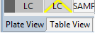

This editor will show you a rectangular grid of wells from a plate that you selected in the Plate Browser.
You can switch tab by choosing one in the bottom left corner:

The two tabs work together by sharing the selected wells. A well that is selected in the Plate View will also be selected in the Table View.